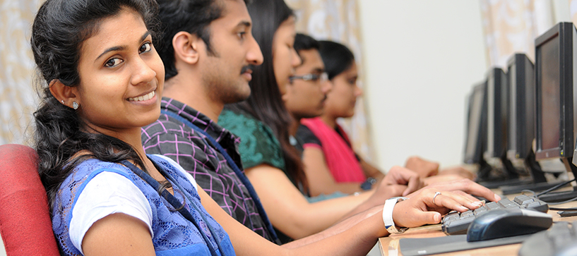

Program Offered
BCA
The BCA (Bachelor of Computer Application) programme provides the essential skills for the students to create a successful career in the information technology domain. It also prepares the student with the requisite background to pursue post graduate studies like MCA, MTech, MS in computers, MBA etc. anywhere in the world and acquire greater competency.
The BCA course is spread across six semesters in three years and is a programme affiliated to Bangalore University. Each semester comprises of seven papers with a right blend of theory and practice enabling the students to make a career in computer applications or equip them for self-employed positions. The course content is regularly updated to keep pace with IT sector. During the three years of graduation, the students go through intensive theoretical and practical training sessions in various aspects of computer science. Besides they are enriched with knowledge beyond the curriculum through various value added courses, certificate courses, seminars, workshops, industrial visits etc.
The curriculum is rightly tuned for the holistic development of the students and aims at nurturing them as proficient computer professionals.
Eligibility for Admission
Any student who has passed PUC/10+2/Pre-University equivalent courses in Science, Arts or Commerce securing a minimum of 40% of marks is eligible.
BSc CSME
B.Sc. CSME (Computer Science, Mathematics and Electronics) is a three year under graduate programme affiliated to Bangalore University spanning over six semesters. It follows triple major system wherein students study Computer Science, Mathematics and Statistics/Electronics as major subjects. This three year programme paves way for taking up postgraduate programmes in computers science, mathematics, Statistics/ Electronics.
Computer Science
Major papers in computer science include computer organization, operating systems, database management systems, data structures, software engineering, computer graphics and internet technology. The students become proficient in various programming languages like C, C++, Java, .Net etc. The students develop application projects prescribed in the syllabus during the respective semesters. They also engage in various knowledge enrichment activities.
Mathematics
Maths curriculum consists of intensive and extensive topics like Differential Equations, Linear Algebra, Groups, Rings, Fields, Vector Spaces, Vector Algebra, Vector Calculus, Real Analysis, Vector Mechanics, Numerical Analysis, Complex Analysis, Calculus and Advanced Calculus etc. enabling the student to transform the mathematical interests to other intellectual endeavors.
Electronics
A sound knowledge of the basic principle and design procedure has become elementary in the competitive world. Career opportunities in electronics continue to expand and become more varied with every passing year. The curriculum is framed to equip the students with an in-depth knowledge about discrete components, electronic devices, digital electronics, communication system, fiber optic communication, microprocessors and embedded systems.
Eligibility for Admission Pass in 10+2/Pre University courses/Equivalent. Candidates should have studied at least two subjects from Mathematics, Computer Science, Statistics or Physics
BSc CSMS
B.Sc. CSMS (Computer Science, Mathematics and Statistics) is a three year under graduate programme affiliated to Bangalore University spanning over six semesters. It follows triple major system wherein students study Computer Science, Mathematics and Statistics/Electronics as major subjects. This three year programme paves way for taking up postgraduate programmes in computers science, mathematics, Statistics/ Electronics.
Computer Science
Major papers in computer science include computer organization, operating systems, database management systems, data structures, software engineering, computer graphics and internet technology. The students become proficient in various programming languages like C, C++, Java, .Net etc. The students develop application projects prescribed in the syllabus during the respective semesters. They also engage in various knowledge enrichment activities.
Mathematics
Maths curriculum consists of intensive and extensive topics like Differential Equations, Linear Algebra, Groups, Rings, Fields, Vector Spaces, Vector Algebra, Vector Calculus, Real Analysis, Vector Mechanics, Numerical Analysis, Complex Analysis, Calculus and Advanced Calculus etc. enabling the student to transform the mathematical interests to other intellectual endeavors.
Statistics
Statistics is a mathematical science pertaining to collection, classification, analysis, interpretation or explanation and presentation of numerical data. In the modern world the science of statistics is an indispensable part of every sphere of human activity and is extensively applied in framing policies and formulating decisions in a large number of diversified fields covering natural, economical physical and social sciences. This three year course includes topics on descriptive statistics, statistical inference, sampling theory, experimental design, demography, industrial statistics like statistical quality control and operations research.
Eligibility for Admission Pass in 10+2/Pre University course/Equivalent. Candidates should have studied at least two subjects from Mathematics, Computer Science, Statistics or Physics
.